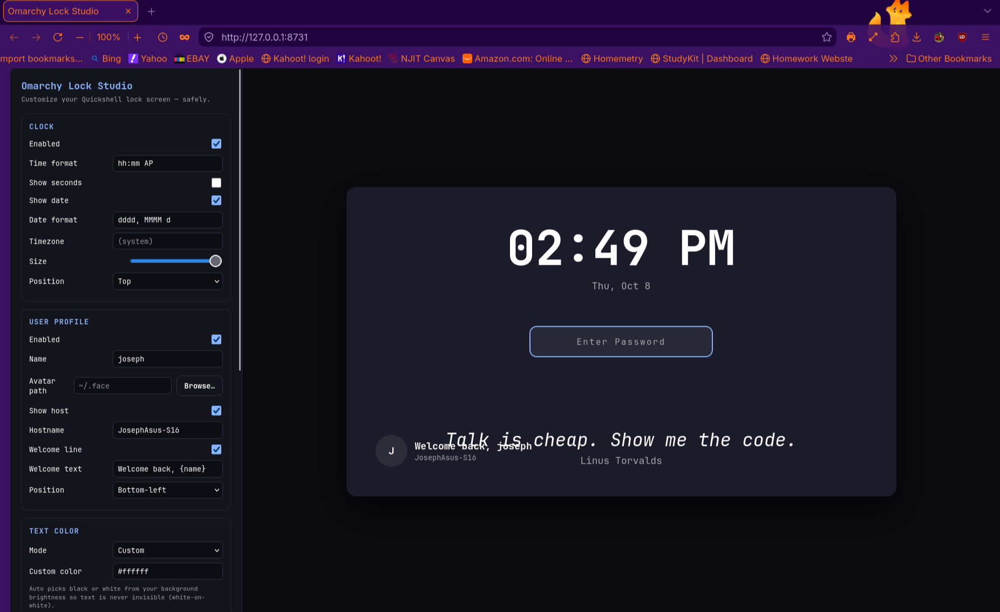
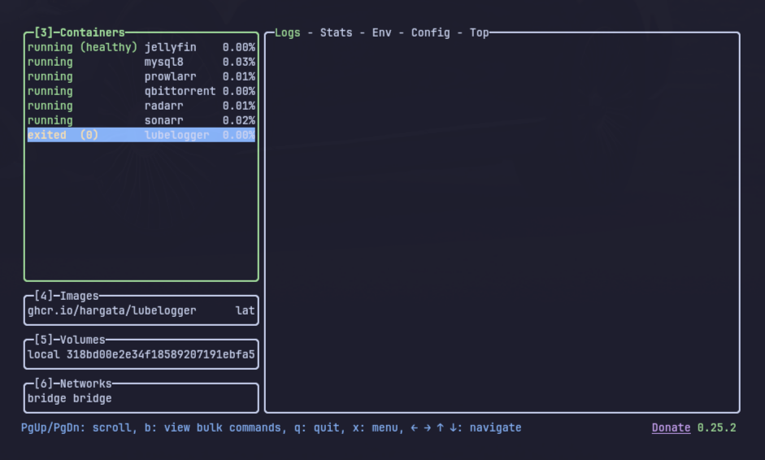
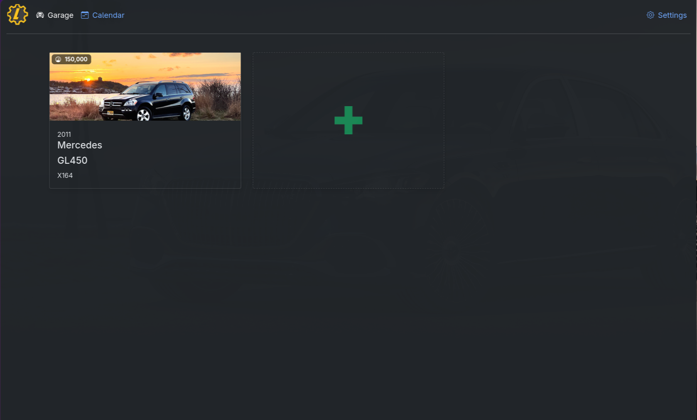

omarchy-lock-studio
Python web app that themes my Linux lock screen without breaking login.
STUDENT. BUILDER. ALWAYS CURIOUS.
JOSEPH MICHAEL SHAKER ↗
Software and Data Engineering student, Linux and homelab builder, responsive web developer.
Software and Data Engineering Technology undergrad based in Aberdeen, NJ, studying in Newark. I build Linux tools, web apps, and homelab systems: C++, Node.js, Docker, and modern HTML/CSS/JS.
Joseph M. Shaker
Software + Data Engineering
joseph@homelab:~$ build somethingA snapshot of what I've built. Full details live on the Projects page.

Python web app that themes my Linux lock screen without breaking login.


Semantic HTML, modern CSS, and vanilla JS, from booking widgets to this five-page portfolio.
Arch/Omarchy daily driver, Docker media stack, and self-hosted tools like LubeLogger.
SolidWorks CAD, video editing, and car culture, proud GL450 enthusiast.
I read the docs, reproduce the problem, and map the moving parts before touching anything.
Smallest working version first, then layers: styling, validation, polish.
Phone screens, keyboard-only use, no-JS fallback. I test the edges, not just the happy path.
Deploy to GitHub Pages, write the README, and note the gotchas for next time.

Take my details with you.
Open phone card ↗